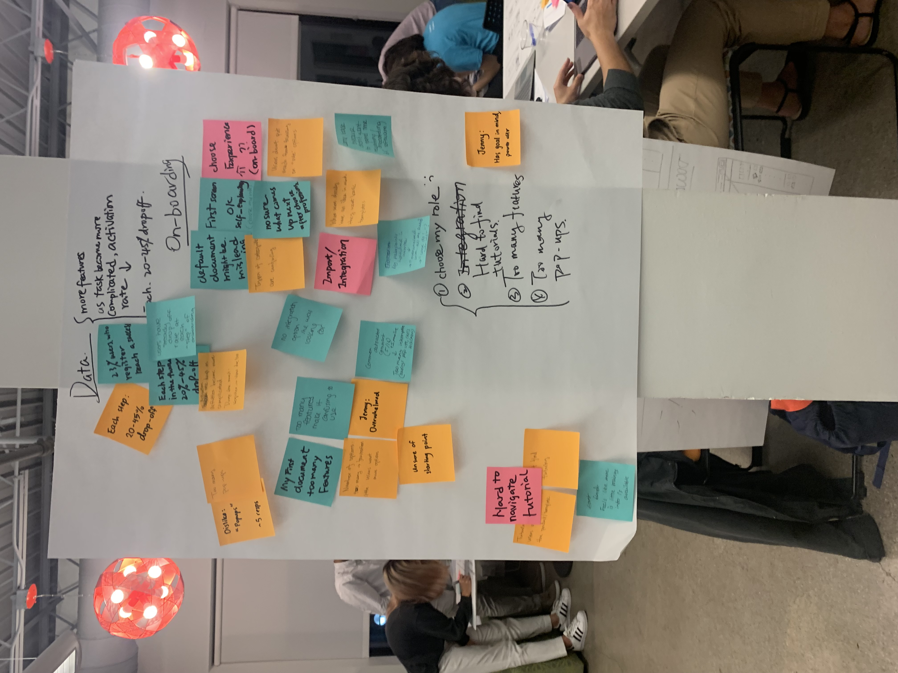
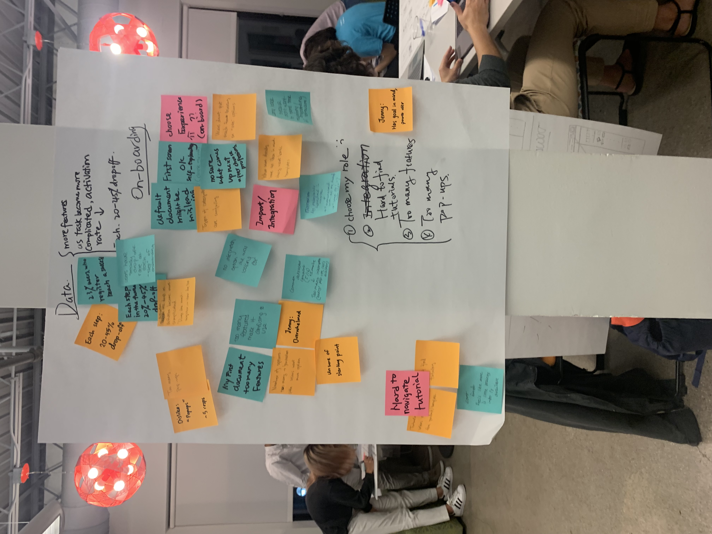

Design Jam w/ Lucidpress
Overview: I participated in a design jam session with Lucidpress to design a solution for their onboarding process with a group of 4 other people.Timeline: 3 hours
Problem Statement:
Lucidpress has thousands of new users on a daily basis but they have a hard time retaining these users due to their difficult onboarding process. Because the product is so unfamiliar to many users, Lucidpress wanted us to brainstorm solutions for them to improve retention and engagement within the product.
Context:
A 3 hour employer session with Lucidpress when they came to the University of Michigan campus for recruitment.
We were given a packet of information regarding one specific user persona, Jenny, who was a professional seeking help to create a diagram for her company. She was in her mid-20’s and was working in a professional setting.
Userflow & Mapping:
 

We tried to solve the main issues that we found parsing through user interviews that the initial sign up processes was too long which meant that many users didn’t feel the need to complete the process, that it was hard to find the tutorials to successfully create a new document, that there were too many functions that were poorly explained so that the user felt overwhelmed, and that there were too many popups in general for the entirety of the application. To combat these issues, we came up with a variety of different wireframes that targeted different problems in the different stages of onboarding.
Design:
Although I did not have the opportunity to take a picture of our final wireframes during the challenge, I quickly recreated wireframes of the first few pages that we drew:


Summary:
This was my very first design jam and although we did not win the challenge, I learned a lot about immersing myself as the user and parsing through user interviews to gain more information and determine user requirements.